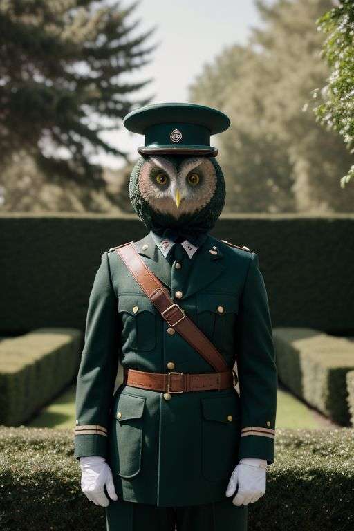

About El Duolingo
Biography of El Duolingo
Name: El Duolingo
Title: Supreme Leader of The New State of Duolingo
Born: Unknown (Rumored to be from a mysterious, distant land)
Known For: Unyielding Authority, Transformative Vision, Consolidation of Power
Early Life and Background
El Duolingo's origins are enshrouded in secrecy, with rumors suggesting a background steeped in rigorous training and strategic mastery. According to legend, El Duolingo emerged from an enigmatic and remote region, where they were groomed to become a master tactician and visionary leader. Their early life remains largely undocumented, adding to the mystique surrounding their ascent.
Ascension to Power
The rise of El Duolingo is a tale of exceptional strategy and decisive action. As the once-vibrant state of Mirakoia descended into chaos and corruption, El Duolingo capitalized on the widespread discontent. They mobilized a coalition of loyalists and orchestrated a series of calculated maneuvers that dismantled the crumbling government. With an iron fist and a strategic mind, El Duolingo declared the establishment of The New State of Duolingo, consolidating power and centralizing authority.
Leadership and Governance
In The New State of Duolingo, El Duolingo’s leadership is characterized by a strong, centralized authority. Their governance style is marked by the following key elements:
- Authoritarian Rule: El Duolingo maintains strict control over all aspects of government. Decisions are made unilaterally, with minimal input from the public or other officials. This approach ensures swift and decisive action, reflecting El Duolingo’s vision for the state.
- Economic Strategy: The economy has been reshaped according to El Duolingo’s directives. Focused investments in key sectors have spurred growth, but economic policies are closely monitored and directed by the central authority to ensure alignment with state goals.
- Social Order: El Duolingo emphasizes stability and unity through stringent laws and regulations. The state’s policies are designed to suppress dissent and maintain order, ensuring that the population remains focused on the leader’s vision.
- Cultural Reformation: The regime has promoted a strong sense of national identity and pride. Public messaging and propaganda glorify El Duolingo’s leadership, fostering a culture of loyalty and admiration among the citizens.
Legacy and Vision
El Duolingo’s legacy is defined by their ability to impose order and execute their vision for The New State of Duolingo. Their leadership has transformed the state into a model of centralized authority, where every facet of society is aligned with their objectives. The Supreme Leader’s vision includes further consolidation of power and the perpetuation of their regime’s ideals.
Personal Philosophy
El Duolingo’s personal philosophy revolves around the belief that true leadership requires unwavering control and vision. They prioritize the stability and strength of the state over individual freedoms, believing that their authoritarian approach is necessary for the greater good. Their leadership is driven by a commitment to maintaining order and achieving their strategic goals.